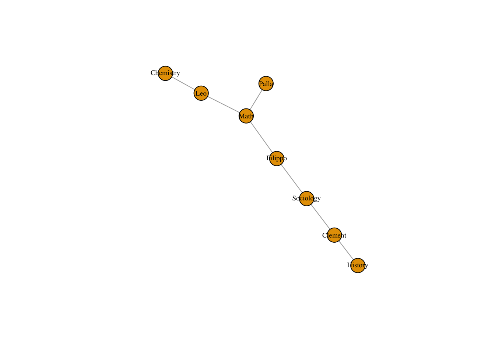
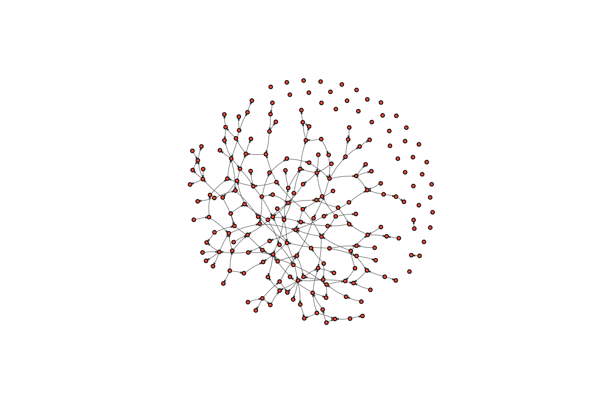

11 Measuring transitivity and structural balance
The main goal of this tutorial is to explain the triad census, how to calculate it in igraph and how to use simulation to estimate the expected triad census result under a null model to use as a basis of comparison in evaluating an observed network.
We can break large social networks down into their constituent parts. These constituent parts are referred to as “motifs”. The most basic motif consists of two nodes and is called a dyad. Edges in a network signify the presence or absence of dyadic relations. It follows that a dyad in an undirected network can have two possible structures: connected or disconnected; and four possible structures in a directed network.
Density captures, at the macro-level, the proportion of dyads that are present over the possible total number of dyads in the network. We are simply re-framing what we discussed last class, except we are focusing on the configuration of nodes as opposed to edges.
Triads consist of three nodes and are therefore more complex than dyads, with more possible arrangements.
This becomes clear when you realize an undirected triad consists of three dyads: A and B, B and C, and A and C.
In an undirected graph, there are eight possible triads (2^3… sort of obvious given that each dyad can be present or absent and there are three dyads). Of those eight possible triads, four are isomorphic, so that there are four unique triads.
In an directed graph, there will be sixteen unique triads (the unique number of motifs in directed graphs is not easily reduced to a functional form).
Take Professor Bearman’s paper “Chains of Affection” as an example. He and his colleagues found that the spanning tree network observed in the high school lacked 3, 4 and 5 “cycles”.
This is another way of saying there were no complete triads, quadrads or pentrads in the network. If we see a network with very few triads, then we know something about the macro-level structure, just by looking at the frequencies of its constituent parts at the micro-level.
The triad census calculates how many triads there are of each type (which, as I just mentioned, in a directed network amounts to 16). If this distribution of triads is different than the distribution in a random network, then it could tell us something about the macro-level structure that we couldn’t observe just by looking at a visualization of the network.
11.1 Calculating a triad census
igraph has a built in function for the triad census: triad.census()
It takes a network object as an argument and returns the number of each type of triad in the network.
First, load in igraph.
Next download the network we will analyze (simulated data of an Add Health high school, called Faux Mesa High) and its network attributes by following this link: www.markanthonyhoffman.com/downloads/faux_mesa_files.zip
It should download a zipped file to your computer . Unzip it and drag its contents into your R Project folder.
Once you have the files in your folder, we can run the code below. It loads the network using the graph.data.frame() function from the previous tutorial.
faux_edgelist <- read.csv('faux_edgelist.csv', stringsAsFactors = F)
faux_attributes <- read.csv('faux_attributes.csv', stringsAsFactors = F)
fauxNetwork <- graph.data.frame(faux_edgelist, directed = T, vertices = faux_attributes)Let’s plot it to see how it looks!
plot(fauxNetwork,
vertex.size = 3,
vertex.label = NA,
edge.curved = .1,
vertex.color = "tomato",
edge.arrow.size = .1,
edge.width = .5,
edge.color = "grey30")
It appears to be pretty clustered, with a few distinct groups.
Now we can run the triad.census() function from igraph in order to calculate the triad census.
## [1] 1374298 40077 0 215 105 153 0 0
## [9] 62 0 0 0 0 0 0 0As you can see, it returns 16 different numbers. It uses the M-A-N classification structure: M stands for the number of Mutual ties, A stands for the number of Asymmetric ties, and N stands for the number of Null ties.
Mutual means that ego and alter (say A and B) have a mutual relation with each other (A likes B and B likes A). A means that ego and alter have an asymmetric relation with one another, i.e. A likes B but B doesn’t like A… the relation is not reciprocated. Finally, N means that A and B do not have any relation.
The image below visualizes the different types of triads possible in a directed graph.

?triad.census also describes these possible types, telling you the order that the triad types are presented in the triad.census() output.
003 for example means there are 0 mutual relation, 0 asymmetric relations and 3 null relations. This triad contains no relations. 201 would mean there are two mutual relations, zero asymmetric relations, and 1 null relation. Of three dyads in the triad, two dyads are in a relation, and one dyad is not.
11.2 Generating a random graph for comparison
However, we are generally not interested in pure counts. Like in any statistical analysis, we want to know what distribution we would expect by chance, so that we can see if our distribution is meaningfully different. We can approach this question from two different angles: simulation or mathematical derivation.
In both cases, we will utilize random graphs as our null model. In random graphs, the chance that any two dyads are in a relation is determined by chance (i.e. the flip of a coin). This means that the likelihood of observing a given tie is independent from observing a tie between any other dyad.
There are a lot of reasons that this is unrealistic.. For example, if A and B are friends and A and C are friends, then we would expect the probability that B and C are friends to be higher. This is a basic feature of most social networks… you are more likely to be friends with your friends friends than with strangers. We therefore might want to factor in this human tendency towards triadic closure into our null model - later in the class I will discuss ways of doing this. However, random graphs have many properties that are mathematically and heuristically useful, which is why they are commonly used as null models. We will try to think of better null structures as class goes on.
igraph has a fast and easy function for generating random graphs.
In an erdos.renyi.graph, each edge has the same probability of being created. We determine the probability and it returns a random graph with a density that equals (in expectation) this probability.
random_graph <- erdos.renyi.game(n = vcount(fauxNetwork), p.or.m = graph.density(fauxNetwork), directed = TRUE) # where n is the number of nodes, p.or.m is the probability of drawing an edge, directed is whether the network is directed or not
plot(random_graph,
vertex.size = 3,
vertex.label = NA,
edge.curved = .1,
vertex.color = "tomato",
edge.arrow.size = .1,
edge.width = .5,
edge.color = "grey30")
We will look more closely at the properties of random graphs when we focus on simulation in later weeks. For now let’s look at the triad census of this random graph.
## [1] 1374123 40368 0 105 95 216 0 0
## [9] 3 0 0 0 0 0 0 0Most triads are null. This is because edges only have a 5% chance of being drawn. It follows that 95% of the total possible edges are missing.
There are not many cases of transitive triads, or even in which all three dyads have a relationship. Thus, the majority of triads are concentrated in the left side of the triad distribution
Let’s compare it Faux Mesa High.
## [1] 1374298 40077 0 215 105 153 0 0
## [9] 62 0 0 0 0 0 0 0Which triads are common in Faux Mesa High, but not in the random graph? What might this tell us?
11.3 Random graphs galore!
The problem is that we are basing our analysis on a single random graph. But since drawing edges is random, there is a lot of variation in the structure of random graphs, especially when the number of nodes in the graph is small (less than one thousand).
So let’s generate one hundred random graphs, and create a distribution of random graph triad censuses and see where our graph lies on that distribution
trial <- vector("list", 100) # this creates a list with 100 spaces to store things. We will store each result here.
for ( i in 1:100 ){ # We repeat our exercise 100 times
random_graph <- erdos.renyi.game(n = vcount(fauxNetwork), p.or.m = graph.density(fauxNetwork), directed = TRUE)
trial[[i]] <- triad.census(random_graph) # We assign to the ith space the result. So for the first iteration, it will assign the result to the first space in the list
}
Reduce("+",trial)/100 # The Reduce function will sum each element of the vectors in the list. We divide these values by 100 (the number of iterations) to get the average value for each type of triad for the 100 random graphs we generated## [1] 1374163.89 40243.95 105.61 98.21 98.39 196.61
## [7] 1.07 0.89 0.87 0.49 0.00 0.01
## [13] 0.00 0.01 0.00 0.00## [1] 1374298 40077 0 215 105 153 0 0
## [9] 62 0 0 0 0 0 0 0Beautiful! What do you see? Which triads are more common in our graph than in a random graph? What might this tell us about the macro-structure?